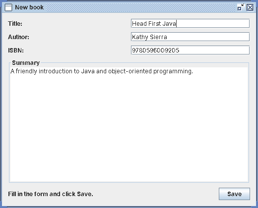
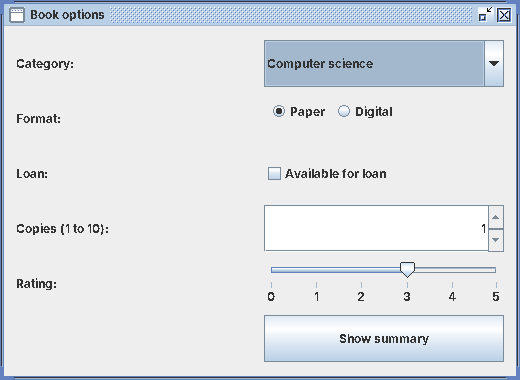
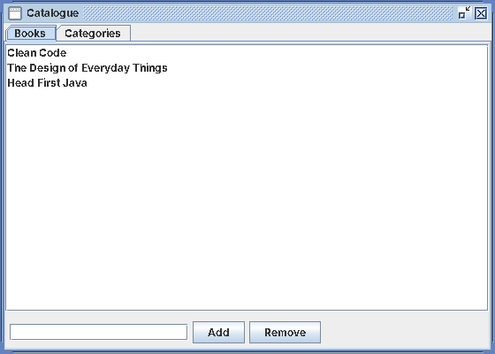
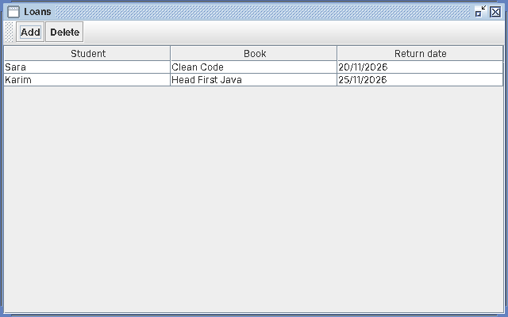
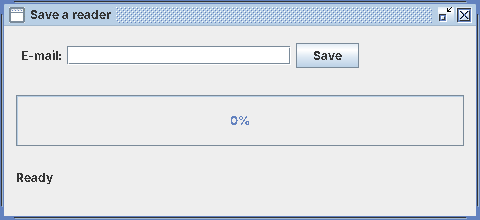

École Supérieure des Sciences et Technologies (ESST)
Department of Computer Science
- Module
- Human-Computer Interaction (HCI)
- Level
- L3 ISIL – Semester 5
- Instructor
- Dr. Izountar Yousra
- Academic year
- 2026 / 2027
- Lab
- Revision lab – Java Swing and the components of Lecture 4
- Duration
- 3 hours (170 min of work)
- Tools
- Java 21 (JDK) · VS Code · Swing
- Prerequisite
- Labs 1.1, 1.2, 2.1, 2.2 and Lecture 4 (mock-ups)
Revision Lab: the Components of Lecture 4 in Java Swing
You build six small windows of a Campus Library app. Each window uses one family of components seen in Lecture 4: windows and menus, text zones, buttons to make a choice, lists and tabs, tables and tool bars, events and feedback.
For each step you have the real interface to build (click its numbers to name each component), the code to read (it cannot be copied: type it yourself), and short questions to check your understanding.
Rules of the session
- Work only on this page and VS Code. If you leave this page (other tab, other site, page minimised) or your computer leaves the network, your teacher is notified with the time and the duration.
- Put this page on one half of the screen and VS Code on the other half.
- Click ❓ Help at any time: all the commands of this lab are explained.
- At the end: the final quiz (15 min, full screen, one attempt), then ⏏ Quit the session. Closing the tab is not quitting: your teacher sees the difference.
Objectives
- Name the components of Lecture 4 (window, menus, dialog boxes, text zones, buttons, lists, tabs, tables, tool bars, progress indicator, cursors) and find them on a real interface.
- Choose the right Swing class for each component and use its main methods.
- Organise a window with layout managers and panels.
- Handle events and give feedback to the user (messages, progress, busy cursor).
Session plan
| # | Step | Time |
|---|---|---|
| 0 | Setup: the project TpRevision | 10 min |
| 1 | Main window, menus and dialog boxes | 20 min |
| 2 | Text zones, labels and tooltips | 20 min |
| 3 | Buttons to make a choice, spinner and slider | 25 min |
| 4 | Tabs, list and tree | 25 min |
| 5 | Table and tool bar | 25 min |
| 6 | Events and feedback: check, wait, confirm | 25 min |
| 7 | Final quiz on the Lecture 4 components (full screen) | 15 min |
| 8 | Quit the session | 5 min |
Setup: the project TpRevision
⏱ 10 minCreate one Java project for the whole revision and check that Java works.
Guidelines
- Open VS Code, press Ctrl+Shift+P, type
Java: Create Java Project, choose No build tools and name the projectTpRevision. - In the terminal of VS Code (Ctrl+`), type
java -versionandjavac -version. Both must print version 21 (or 17+). - Each step is one class in one file in
src/:MainWindow.java,BookForm.java,BookOptions.java,LibraryTabs.java,BookTable.java,SaveFeedback.java. - Put this page on one half of the screen and VS Code on the other half (Windows key + ← then Windows key + →). Do not open other tabs or sites: your teacher is notified.
Check your understanding
Main window, menus and dialog boxes
⏱ 20 minBuild the main window of the Campus Library app: a title bar, a menu bar with two drop-down menus, a work area, a status bar, and a confirmation dialog before quitting.
Guidelines
- The class
extends JFrame. Set the title, the size 600×400 and center the window withsetLocationRelativeTo(null). - Create a
JMenuBarwith twoJMenu: File (New book, a separator, Quit) and Help (About). Attach it withsetJMenuBar. - In the center (BorderLayout) put a welcome
JLabel; at the bottom (SOUTH) a statusJLabel"Ready". - About →
JOptionPane.showMessageDialog. Quit and the ✕ button →showConfirmDialog(YES / NO): the window closes only on YES. - To catch the ✕ button:
setDefaultCloseOperation(DO_NOTHING_ON_CLOSE)+ aWindowAdapterwithwindowClosing.

MainWindow.java read it, then type it yourselfComponents of Lecture 4 in this window
| # | Lecture 4 name | Swing class | Why |
|---|---|---|---|
| 1 | Title bar | JFrame.setTitle(...) | Window vocabulary (Lecture 4, module 3): name of the window, minimise, maximise, close. |
| 2 | Menu bar | JMenuBar | The entry point of the drop-down menus (module 4: menus). |
| 3 | Drop-down menu | JMenu + JMenuItem | A list of commands triggered by a click; the separator groups the items. |
| 4 | Work area (non-editable text) | JLabel | The work area shows the content of the window. |
| 5 | Status bar | JLabel in BorderLayout.SOUTH | Gives feedback to the user ("Ready", "New book…"). |
| 6 | Close button → dialog box | WindowAdapter.windowClosing + JOptionPane.showConfirmDialog | A dialog box (secondary window) asks for confirmation before an important action. |
Check your understanding
Text zones, labels and tooltips
⏱ 20 minBuild the form New book: three single-line text zones with their labels, a multi-line summary with a scrollbar, a tooltip, and a Save button that shows the result.
Guidelines
- Use a
JPanelwithGridLayout(3, 2, 8, 8): label on the left,JTextFieldon the right. - Add a tooltip on the ISBN field with
setToolTipText(...): hover the field 1 second to see it. - The summary is a
JTextArea(6, 30)withsetLineWrap(true), placed inside aJScrollPanewith a titled border. - Save → read the fields with
getText()and write the result in aJLabel. - Assemble with a BorderLayout: fields at NORTH, summary at CENTER, result + button at SOUTH.

BookForm.java read it, then type it yourselfComponents of Lecture 4 in this window
| # | Lecture 4 name | Swing class | Why |
|---|---|---|---|
| 1 | Label | JLabel | Text attached to a component: it tells the user what to type. |
| 2 | Single-line text zone | JTextField | One piece of information on one line (input task). |
| 3 | Text zone with a tooltip | setToolTipText(...) | The help bubble appears after a short hover (utility windows, module 3). |
| 4 | Multi-line text zone + scrollbar | JTextArea in a JScrollPane | A long text on several lines; the scrollbar appears when needed. |
| 5 | Non-editable text (result) | JLabel.setText(...) | Displays information; the user cannot type in it. |
| 6 | Push button (action) | JButton + ActionListener | Executes an action when clicked (triggering task). |
Check your understanding
Buttons to make a choice, spinner and slider
⏱ 25 minBuild the window Book options with one component for each kind of choice: drop-down list, radio buttons, check box, increment spinner and slider. A button shows a summary in a dialog box.
Guidelines
JComboBox<String>with 4 categories: one value among many, only the chosen value is visible.- Two
JRadioButton(Paper, Digital) in the sameButtonGroup: ticking one removes the other. - A
JCheckBox"Available for loan": a yes / no option. - A
JSpinnerwithnew SpinnerNumberModel(1, 1, 10, 1): value, min, max, step. - A
JSlider(0, 5, 3)with ticks and labels: an approximate value. - Show summary → build a text with
getSelectedItem(),isSelected(),getValue()and show it withshowMessageDialog.

BookOptions.java read it, then type it yourselfComponents of Lecture 4 in this window
| # | Lecture 4 name | Swing class | Why |
|---|---|---|---|
| 1 | Drop-down list | JComboBox<String> | The chosen value is always visible; the list opens with the arrow. |
| 2 | Radio buttons (1 among n) | JRadioButton + ButtonGroup | Exclusive alternatives: one choice only. |
| 3 | Check box | JCheckBox | Between 0 and m options, not exclusive (here one yes/no option). |
| 4 | Increment spinner | JSpinner + SpinnerNumberModel | A precise value with min, max and step. |
| 5 | Slider (straight selector) | JSlider | An approximate value, with or without the number displayed. |
| 6 | Push button → dialog box | JButton + JOptionPane | Triggers the action and shows the result in a message. |
Check your understanding
Tabs, list and tree
⏱ 25 minBuild the Catalogue window with two tabs: a list of books that you can add to and remove from, and a tree of categories.
Guidelines
- A
JTabbedPanewith two tabs: Books and Categories (addTab). - The list uses a model:
DefaultListModel<String>+JList, single selection, inside aJScrollPane. - Add →
model.addElement(text)if the field is not empty. Remove →model.remove(list.getSelectedIndex())if an item is selected. - The tree:
DefaultMutableTreeNodenodes (Library → Computer science → Programming, HCI; Mathematics → Algebra) shown withnew JTree(root). - Import
javax.swing.tree.DefaultMutableTreeNode.

LibraryTabs.java read it, then type it yourselfComponents of Lecture 4 in this window
| # | Lecture 4 name | Swing class | Why |
|---|---|---|---|
| 1 | Tabs (tabbed notebook) | JTabbedPane | Groups (module 5): structured information in pages labelled by tabs. |
| 2 | List (single selection) | JList + DefaultListModel | Ordered content always displayed; scrollbar if there are many items. |
| 3 | Text zone (input) | JTextField | The title of the new book. |
| 4 | Push button: Add | JButton + ActionListener | Adds the typed title to the model of the list. |
| 5 | Push button: Remove | JButton + ActionListener | Removes the selected item (nothing happens if nothing is selected). |
Check your understanding
Table and tool bar
⏱ 25 minBuild the Loans window: a table of loans that can be sorted, and a tool bar with Add and Delete buttons with tooltips.
Guidelines
DefaultTableModel(columns, 0)with 3 columns (Student, Book, Return date) and 2 first rows (addRow).JTableinside aJScrollPane(otherwise the header is not visible).setAutoCreateRowSorter(true): click a header to sort.- A
JToolBarat NORTH with two buttons and their tooltips. - Add →
JOptionPane.showInputDialogasks the student name, thenaddRow. - Delete → if no row is selected, a warning message; otherwise
removeRow(table.convertRowIndexToModel(row))(needed when the table is sorted).

BookTable.java read it, then type it yourselfComponents of Lecture 4 in this window
| # | Lecture 4 name | Swing class | Why |
|---|---|---|---|
| 1 | Tool bar | JToolBar | Direct access to frequent commands (buttons and icons). |
| 2 | Button with a tooltip | JButton.setToolTipText | Hover it: the tooltip explains the command. |
| 3 | Table header (click to sort) | setAutoCreateRowSorter(true) | Click a header to sort the rows. |
| 4 | Table / grid | JTable + DefaultTableModel | 2-D organisation of data: rows, columns, headers. |
Check your understanding
Events and feedback: check, wait, confirm
⏱ 25 minBuild the window Save a reader: check the e-mail, then simulate a 2-second save with a busy cursor, a disabled button, a progress bar and a final message.
Guidelines
- If the e-mail has no
@or no dot: an error message that says how to fix it, then put the focus back in the field (requestFocus()). - Otherwise: disable the button (
setEnabled(false)) and show the busy cursor (Cursor.WAIT_CURSOR). - A
javax.swing.Timerevery 100 ms adds 5 to theJProgressBar; at 100 it stops, restores the cursor and the button, and writes "Saved". - Use
javax.swing.Timer, notThread.sleep: sleep would freeze the interface (no events are processed). - Test: type a wrong e-mail, then a correct one.

SaveFeedback.java read it, then type it yourselfComponents of Lecture 4 in this window
| # | Lecture 4 name | Swing class | Why |
|---|---|---|---|
| 1 | Input task + data check | JTextField + validation | The data is checked before the action (protection against errors). |
| 2 | Triggering task | JButton + ActionListener | The click is an event placed in the event queue, then dispatched to onSave(). |
| 3 | Progress indicator | JProgressBar + javax.swing.Timer | Shows that the system works and how far it is (feedback). |
| 4 | Status message | JLabel.setText | Tells the user what happens: Saving…, then Saved. |
Check your understanding
Final quiz: the components of Lecture 4
⏱ 15 min12 questions. The quiz opens in full screen: do not leave it (each exit is counted and sent to your teacher). One attempt. You see your score at the end, not the corrections.
Quit the session
⏱ 5 minWhen you have finished, close your Java windows, save your files in VS Code, then click the button below. Your teacher receives your summary: steps finished, checks, quiz score and the time you left the page.
Human-Computer Interaction · ESST · Revision lab